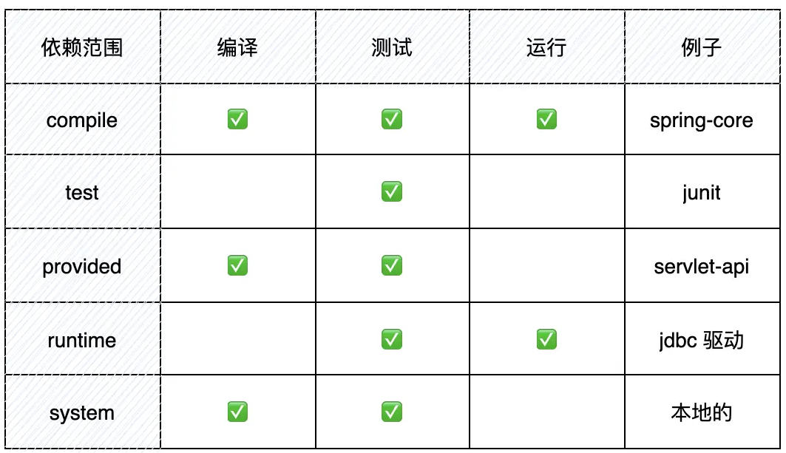
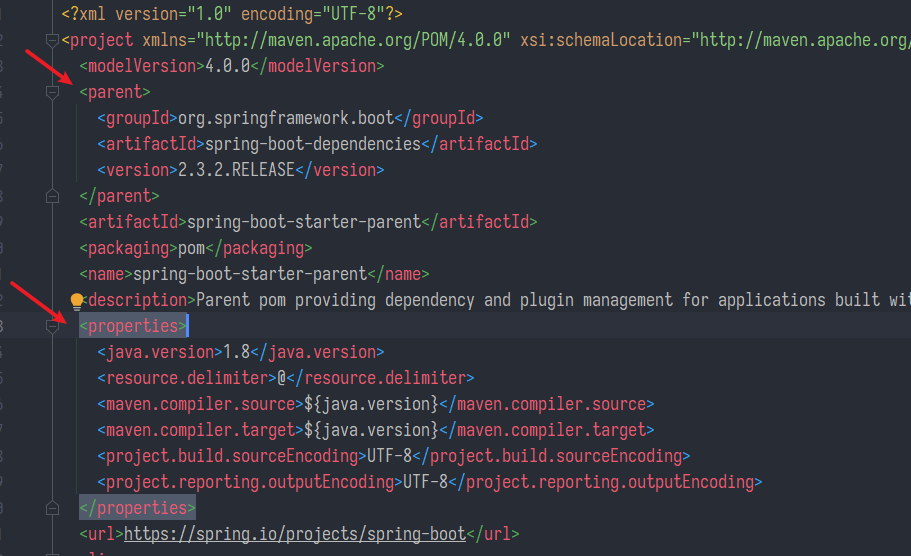
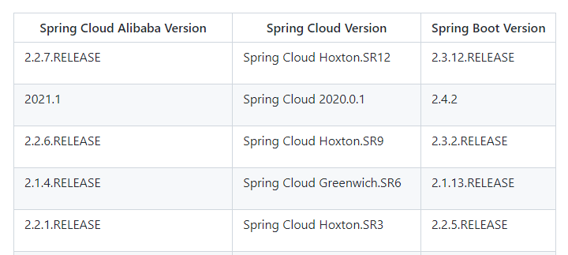

Maven多模組管理
- groupId、artifactId、version稱為gav，三個必要項組成座標
<project>
...
<dependencies>
<dependency>
<groupId>實際項目</groupId>
<artifactId>模塊</artifactId>
<version>版本</version>
<type>依賴類型</type>
<scope>依賴範圍</scope>
<optional>依賴是否可選</optional>
<!—主要用於排除傳遞性依賴-->
<exclusions>
<exclusion>
<groupId>…</groupId>
<artifactId>…</artifactId>
</exclusion>
</exclusions>
</dependency>
<dependencies>
...
</project>

-
compile，預設的依賴範圍，表示依賴需要參與當前項目的編譯，後續的測試、運行週期也參與其中，是比較強的依賴。
-
test，表示依賴僅僅參與測試相關的工作，包括測試代碼的編譯和運行。比較典型的如 junit。
-
runntime，表示依賴無需參與到項目的編譯，不過後期的測試和運行需要其參與其中。
-
provided，表示打包的時候可以不用包進去，別的容器會提供。和 compile 相當，但是在打包階段做了排除的動作。
-
system，從參與程度上來説，和 provided 類似，但不通過 Maven 倉庫解析，可能會造成構建的不可移植，要謹慎使用。
部分引用自 沉默王二 鏈接：https://juejin.cn/post/7033652977973854244
父項目的作用
- 父項目繼承spring框架
- 繼承spring-boot-starter-parent同時也會繼承properties例如java.version、UTF-8，就不用自己指定

- 只在父項目定義版本號
- 在父項目dependencyManagement列出版本號但在父項目自己不用，子模組繼承後，顯式聲明某依賴(但不寫版本號)就可以獲取父項目的版本號
- 好比你爸列了一個購物清單，沙發=黑色真皮、桌巾=紅色，但你爸沒有真的去買
- 去購物的是你，如果有買到沙發，你自己沒特別想要的款式那就是預設黑色真皮沙發
- 你爸的購物清單可以很長，沒有說全都要買，他只負責列出來，只出一張嘴
- 你自己有特殊想法那也可以指定版本，不過最好不要這樣很容易亂。統一交給你爸管理
- 父項目讓子模塊之間可以相互引用
spring-boot-dependencies
-
spring-boot-starter-parent 又繼承自 spring-boot-dependencies
-
而 spring-boot-dependencies 沒有
parent， 它是頂級pom，其中<properties>內定義了很多常見項目的版本號，舉例:
spring-boot-test
spring-boot-starter-web
mysql-connector-java
各種jdbc
java web常用依賴
commons-lang3.version
org.apache.httpcomponents
javax.servlet
org.projectlombok
- 所以spring-boot很多時候都不用再寫版本號，因為常用的幾乎都可以往上找
其他dependencies
- 只要引用或繼承了XXX-dependencies，就相當於把相關的版本號選擇都交給了它來處理，有這種BOM可以優先選用，能省下很多版本衝突的困擾，尤其是spring cloud這種要求配套的

- spring-cloud-dependencies
spring-cloud-kubernetes.version
spring-cloud-security.version
spring-cloud-openfeign.version
spring-cloud-sleuth.version
spring-cloud-gateway.version
- spring-cloud-alibaba-dependencies
https://github.com/alibaba/spring-cloud-alibaba/wiki/%E7%89%88%E6%9C%AC%E8%AF%B4%E6%98%8E
Sentinel Version
Nacos Version
RocketMQ Version
Dubbo Version
Seata Version
- pluginManagement也是用來聲明版本號，與dependencyManagement用法類似
import scope的使用
-
import scope只能用在 dependencyManagement 裏面，import 也因此是最危險的，因為 import 會把依賴直接展開，而不是用間接傳遞的方式在新應用中體現，
-
它會覆蓋 parent 和 dependency（因為尋根路徑最短，鏈接器會最先被鏈接上），而且無法被 exclude 排除
-
比喻就是import scope相當於不管族譜，在半路上認一個野爹
parent與modules
- 聚合與繼承是獨立的兩件事，只是因為常一起使用所以容易混淆，實際上分開用也完全OK
<modules>
<module>my-project</module>
<module>another-project</module>
</modules>
-
modules: 我是班長，我管理旗下的這些班兵，建構(Maven指令)我也會一起建構我的班兵；但其實班兵不知道自己的班長是誰
-
parent: 我爹是誰，我繼承我爹的特性跟依賴，我爹在dependencyManagement説過版本號是多少，如果我不指定那就用我爹説的版本
其他經驗
- 我在common模組依賴了spring-boot-starter-test，其他模組依賴common，啟動卻報錯，是因為
<scope>test</scope>，編譯時傳遞不過去
<dependency>
<groupId>org.springframework.boot</groupId>
<artifactId>spring-boot-starter-test</artifactId>
<scope>test</scope>
</dependency>
- 有些依賴它就是要properties，我猜他是依賴寫的有問題(裡面某部分有用${}獲取版本)，例如elasticsearch
<properties>
<elasticsearch.version>7.16.2</elasticsearch.version>
</properties>
- 習慣mybatisplus的工具類(例如idworker、判斷空數組等等)，在common模組引用了
mybatis-plus-boot-starter，但是某個模組又沒有實際要連DataSource，可以在啟動類排除
@SpringBootApplication(exclude = {DataSourceAutoConfiguration.class})
完整範例
父項目
- 繼承spring-boot-starter-parent
<packaging>是pom<dependencyManagement>管理依賴版本，主要重點是spring-cloud-dependencies與spring-cloud-alibaba-dependencies- 關於
<properties>寫版本號，其實我覺得有點多餘，因為我所有版本號都只會寫在父項目，根本就在同一頁，那直接看dependencyManagement不就好了。但就有些坑(例如ES)一定要properties版本號，沒辦法
<?xml version="1.0" encoding="UTF-8"?>
<project xmlns="http://maven.apache.org/POM/4.0.0" xmlns:xsi="http://www.w3.org/2001/XMLSchema-instance"
xsi:schemaLocation="http://maven.apache.org/POM/4.0.0 https://maven.apache.org/xsd/maven-4.0.0.xsd">
<modelVersion>4.0.0</modelVersion>
<parent>
<groupId>org.springframework.boot</groupId>
<artifactId>spring-boot-starter-parent</artifactId>
<version>2.3.2.RELEASE</version>
<relativePath/> <!-- lookup parent from repository -->
</parent>
<groupId>yoziming.mall</groupId>
<artifactId>mall-parent</artifactId>
<version>0.0.1-SNAPSHOT</version>
<description>mall父聚合模組，管理依賴版本</description>
<packaging>pom</packaging>
<modules>
<module>auth-server</module>
<module>cart</module>
<module>common</module>
<module>coupon</module>
<module>gateway</module>
<module>member</module>
<module>order</module>
<module>product</module>
<module>renren-fast</module>
<module>search</module>
<module>seckill</module>
<module>third-party</module>
<module>ware</module>
</modules>
<!--版本控制-->
<properties>
<elasticsearch.version>7.16.2</elasticsearch.version>
</properties>
<!--依賴版本管理-->
<dependencyManagement>
<dependencies>
<dependency>
<groupId>org.springframework.cloud</groupId>
<artifactId>spring-cloud-dependencies</artifactId>
<version>Hoxton.SR9</version>
<type>pom</type>
<scope>import</scope>
</dependency>
<dependency>
<groupId>com.alibaba.cloud</groupId>
<artifactId>spring-cloud-alibaba-dependencies</artifactId>
<version>2.2.6.RELEASE</version>
<type>pom</type>
<scope>import</scope>
</dependency>
<dependency>
<groupId>org.apache.httpcomponents</groupId>
<artifactId>httpclient</artifactId>
<version>${httpclient.version}</version>
</dependency>
<dependency>
<groupId>org.springframework.cloud</groupId>
<artifactId>spring-cloud-starter-openfeign</artifactId>
<version>2.2.6.RELEASE</version>
</dependency>
<dependency>
<groupId>org.redisson</groupId>
<artifactId>redisson</artifactId>
<version>3.16.8</version>
</dependency>
<dependency>
<groupId>org.elasticsearch.client</groupId>
<artifactId>elasticsearch-rest-high-level-client</artifactId>
<version>${elasticsearch.version}</version>
</dependency>
<dependency>
<groupId>io.minio</groupId>
<artifactId>minio</artifactId>
<version>3.0.10</version>
</dependency>
<!--工具類-->
<dependency>
<groupId>com.alibaba</groupId>
<artifactId>fastjson</artifactId>
<version>1.2.79</version>
</dependency>
<dependency>
<groupId>cn.hutool</groupId>
<artifactId>hutool-all</artifactId>
<version>5.7.20</version>
</dependency>
<dependency>
<groupId>com.baomidou</groupId>
<artifactId>mybatis-plus-boot-starter</artifactId>
<version>3.5.0</version>
</dependency>
</dependencies>
</dependencyManagement>
</project>
Common模組
- 繼承父項目
<groupId>會警告黃標籤說有繼承重複了，但我看一些源碼幾乎都有留著，所以還是留著吧，強迫症把IDEA這個項目警告關掉- 不要用
<name>標籤，容易混淆 - 在
<dependencies>引用全項目都會用到的依賴，我主要分成4類- JavaWeb相關
- spring-cloud相關
- Database相關
- 工具類: 例如lombok、糊塗
<?xml version="1.0" encoding="UTF-8"?>
<project xmlns="http://maven.apache.org/POM/4.0.0"
xmlns:xsi="http://www.w3.org/2001/XMLSchema-instance"
xsi:schemaLocation="http://maven.apache.org/POM/4.0.0 http://maven.apache.org/xsd/maven-4.0.0.xsd">
<modelVersion>4.0.0</modelVersion>
<parent>
<artifactId>mall-parent</artifactId>
<groupId>yoziming.mall</groupId>
<version>0.0.1-SNAPSHOT</version>
</parent>
<groupId>yoziming.mall</groupId>
<artifactId>common</artifactId>
<version>0.0.1-SNAPSHOT</version>
<description>通用工具類模組</description>
<dependencies>
<!--JavaWeb相關-->
<dependency>
<groupId>org.springframework.boot</groupId>
<artifactId>spring-boot-starter-web</artifactId>
</dependency>
<dependency>
<groupId>org.apache.httpcomponents</groupId>
<artifactId>httpcore</artifactId>
</dependency>
<dependency>
<groupId>org.apache.httpcomponents</groupId>
<artifactId>httpclient</artifactId>
</dependency>
<dependency>
<groupId>javax.servlet</groupId>
<artifactId>javax.servlet-api</artifactId>
</dependency>
<dependency>
<groupId>org.apache.commons</groupId>
<artifactId>commons-lang3</artifactId>
</dependency>
<!--spring-cloud相關-->
<dependency>
<groupId>org.springframework.cloud</groupId>
<artifactId>spring-cloud-starter-openfeign</artifactId>
</dependency>
<!-- 可視化zipkin已經包含鏈路追蹤sleuth -->
<dependency>
<groupId>org.springframework.cloud</groupId>
<artifactId>spring-cloud-starter-zipkin</artifactId>
</dependency>
<!--spring-cloud-alibaba-->
<dependency>
<groupId>com.alibaba.cloud</groupId>
<artifactId>spring-cloud-starter-alibaba-nacos-discovery</artifactId>
</dependency>
<dependency>
<groupId>com.alibaba.cloud</groupId>
<artifactId>spring-cloud-starter-alibaba-nacos-config</artifactId>
</dependency>
<dependency>
<groupId>com.alibaba.cloud</groupId>
<artifactId>spring-cloud-starter-alibaba-sentinel</artifactId>
</dependency>
<!--Database相關-->
<dependency>
<groupId>org.springframework.boot</groupId>
<artifactId>spring-boot-starter-validation</artifactId>
</dependency>
<dependency>
<groupId>mysql</groupId>
<artifactId>mysql-connector-java</artifactId>
</dependency>
<dependency>
<groupId>com.baomidou</groupId>
<artifactId>mybatis-plus-boot-starter</artifactId>
</dependency>
<!--工具類-->
<dependency>
<groupId>org.projectlombok</groupId>
<artifactId>lombok</artifactId>
</dependency>
<dependency>
<groupId>cn.hutool</groupId>
<artifactId>hutool-all</artifactId>
</dependency>
<dependency>
<groupId>com.alibaba</groupId>
<artifactId>fastjson</artifactId>
</dependency>
</dependencies>
<build>
<plugins>
<plugin>
<groupId>org.springframework.boot</groupId>
<artifactId>spring-boot-maven-plugin</artifactId>
</plugin>
</plugins>
</build>
</project>
其他模組
- 繼承父項目
- 依賴common
- 並且有自己用的其他包
spring-boot-maven-plugin是為了讓maven打包spring boot執行用的插件
<?xml version="1.0" encoding="UTF-8"?>
<project xmlns="http://maven.apache.org/POM/4.0.0" xmlns:xsi="http://www.w3.org/2001/XMLSchema-instance"
xsi:schemaLocation="http://maven.apache.org/POM/4.0.0 https://maven.apache.org/xsd/maven-4.0.0.xsd">
<modelVersion>4.0.0</modelVersion>
<parent>
<artifactId>mall-parent</artifactId>
<groupId>yoziming.mall</groupId>
<version>0.0.1-SNAPSHOT</version>
</parent>
<groupId>yoziming.mall</groupId>
<artifactId>product</artifactId>
<version>0.0.1-SNAPSHOT</version>
<description>商品</description>
<dependencies>
<dependency>
<groupId>yoziming.mall</groupId>
<artifactId>common</artifactId>
<version>0.0.1-SNAPSHOT</version>
</dependency>
<dependency>
<groupId>org.springframework.boot</groupId>
<artifactId>spring-boot-starter-test</artifactId>
<scope>test</scope>
</dependency>
<dependency>
<groupId>org.springframework.boot</groupId>
<artifactId>spring-boot-starter-amqp</artifactId>
</dependency>
<dependency>
<groupId>org.springframework.session</groupId>
<artifactId>spring-session-data-redis</artifactId>
</dependency>
<dependency>
<groupId>org.springframework.boot</groupId>
<artifactId>spring-boot-starter-data-redis</artifactId>
</dependency>
<dependency>
<groupId>org.springframework.boot</groupId>
<artifactId>spring-boot-starter-thymeleaf</artifactId>
</dependency>
<dependency>
<groupId>org.redisson</groupId>
<artifactId>redisson</artifactId>
</dependency>
</dependencies>
<build>
<plugins>
<plugin>
<groupId>org.springframework.boot</groupId>
<artifactId>spring-boot-maven-plugin</artifactId>
</plugin>
</plugins>
</build>
</project>
上次修改於 2022-02-08